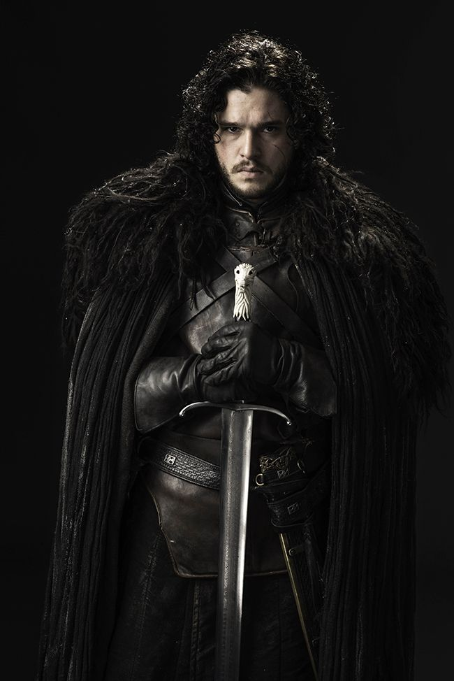
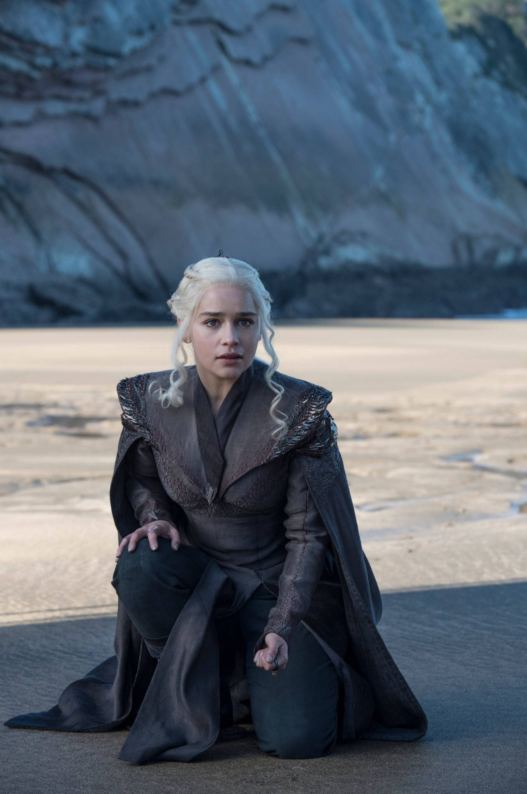
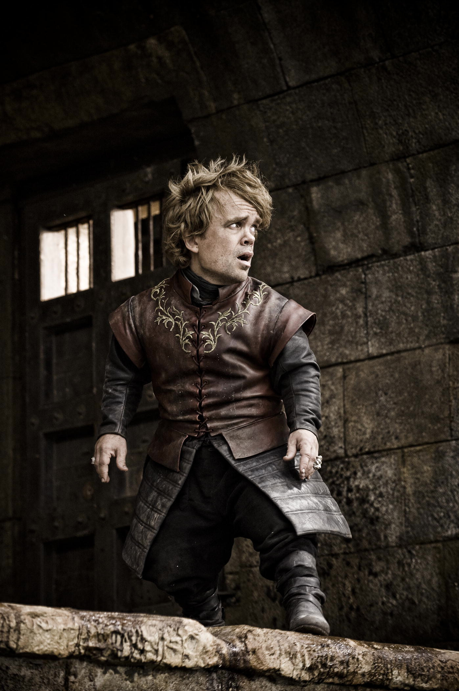
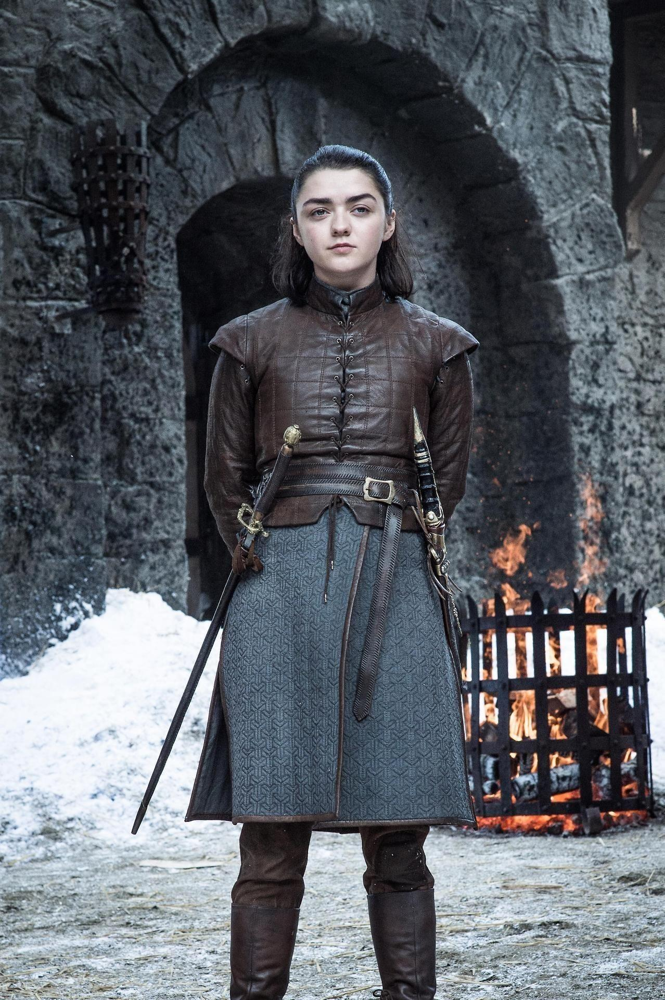
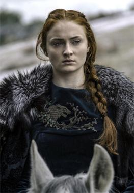

Top 5 Characters
-
Jon Snow
A brave and honorable leader who struggles with his identity and duty.

-
Daenerys Targaryen
A powerful and determined character who fights to reclaim her family's throne.

-
Tyrion Lannister
Known for his intelligence, wit, and survival instincts.

-
Arya Stark
A fearless and independent character with an incredible transformation.

-
Sansa Stark
A character who grows from innocence into political strength.
